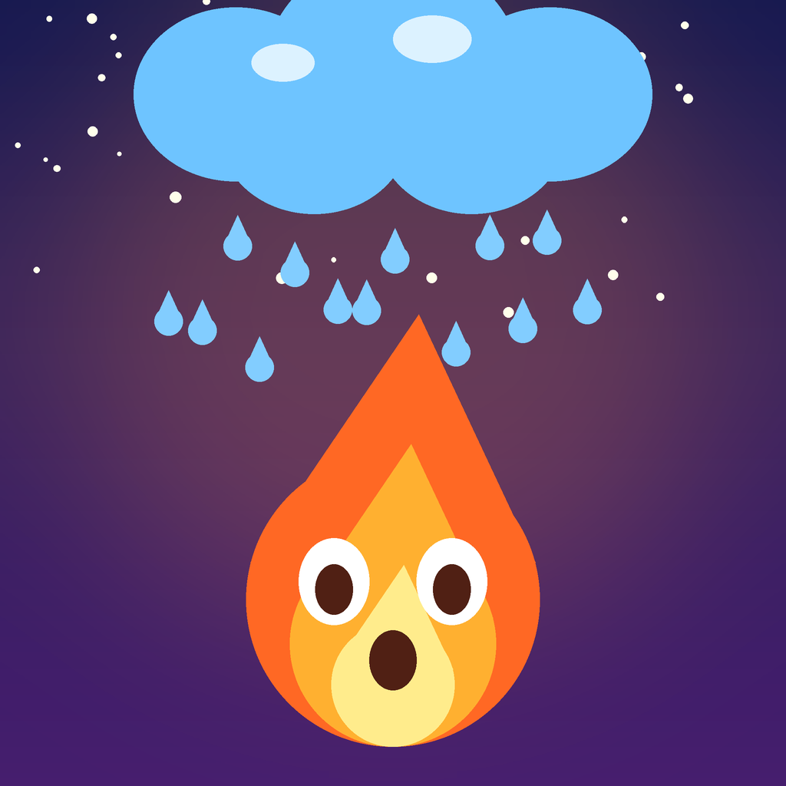

Космические пожарные
Добрая игра для малышей на iPad: 30 миссий на 7 планетах.
Как играть
- На карте коснитесь миссии с ракетой.
- Выберите пожарную ракету и ведите пальцем: вода летит к пальцу. Держите струю на огоньке, пока он не погаснет.
- Озорника ловит полицейская ракета: держите луч на нём, пока круг не замкнётся.
- Когда пожар потушен, перетащите друзей из окон к скорой помощи.
Проиграть нельзя. Если вода кончилась, выберите другую ракету или нажмите «Заправить все ракеты».
Частые вопросы
Нет звука. Проверьте переключатель беззвучного режима и громкость iPad, а также переключатели «Музыка» и «Звуковые эффекты» внизу карты.
Как начать сначала? Внизу карты удерживайте серую надпись для родителей 2 секунды и подтвердите сброс.
Игра собирает данные? Нет. Подробнее — в политике конфиденциальности.
Связь
Напишите нам: spacefirefighters@gmail.com.
Space Firefighters — Support
A gentle iPad game for young children: put out fires on 7 planets and rescue alien friends. There is no way to lose.
No sound? Check the iPad volume and the Music and Sound effects switches at the bottom of the map. To start over, press and hold the grey parents' note at the bottom of the map for 2 seconds.
Privacy: the game collects no data. See the privacy policy.
Contact: spacefirefighters@gmail.com